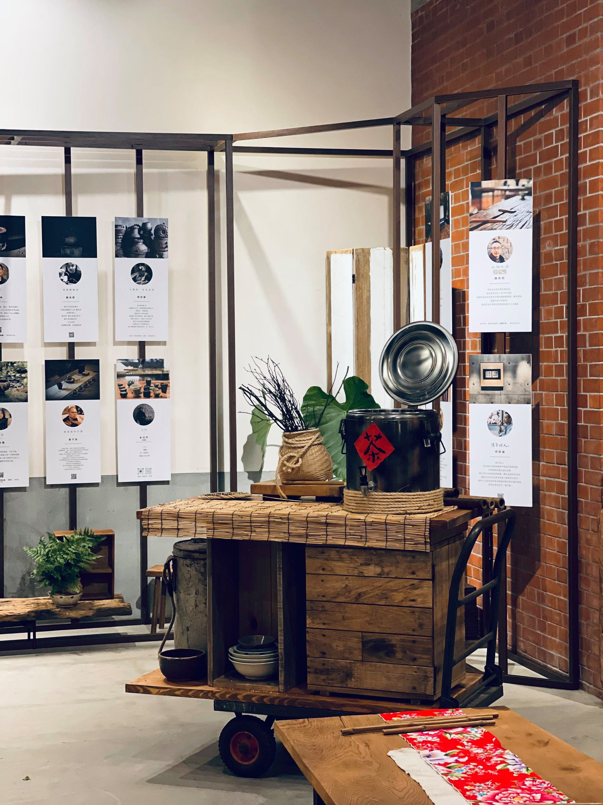
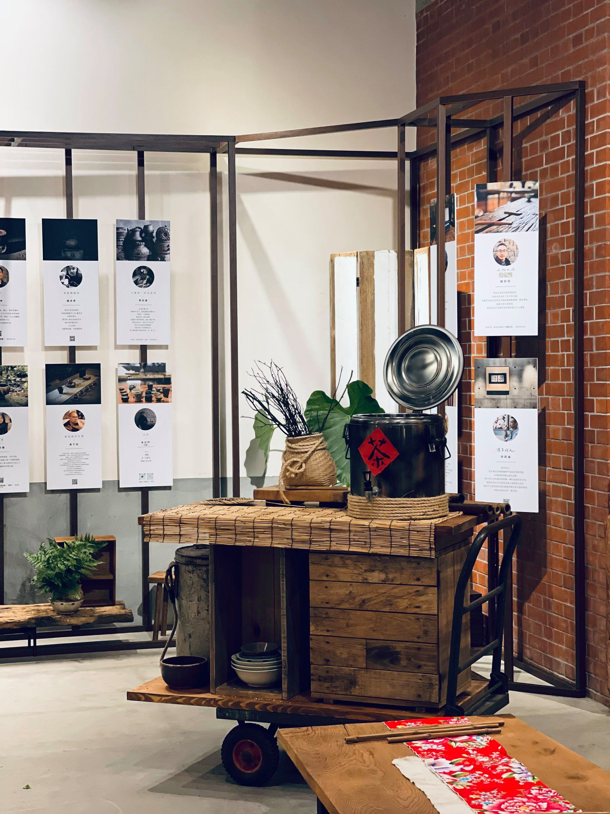

博物館
大稻埕豐沛的人文歷史，使其本身即是一座大型露天博物館，可想而知，博物館中的博物 館，勢必帶有大稻埕文史精隨，充滿值得探訪的故事。 本站介紹的大稻埕博物館有將日治時期新文化運動呈現在我們眼前的「新文化運動紀念館」 、老屋再造，凝聚地方藝術的「207博物館」、以及重現大稻埕經典行業「製茶業」的「 新芳春茶莊」，探訪這些地方，走入時光隧道，一同體會大稻埕的過去與現在。
名人縮影
大稻埕過去人文薈萃，商業發達，現在的大稻埕仍可見到，過去名人的身影。 陳天來故居位於貴德街，前身為錦記茶行，建於1920年，過去為大稻埕名聞遐邇的聚會 地，見證了20世紀初大稻埕的風華。 李春生紀念教堂位於貴德街，紀念因做洋行買辦起家而致富的「臺灣茶葉之父」。 李臨秋故居位於西寧北路，在一棟閩南式家屋的二樓，展示李臨秋生前手稿等物品， 此外，還可以見到名曲〈望春風〉的商標登錄證，十分珍貴。


廟宇
霞海城隍廟、法主公廟與慈聖宮，被稱為大稻埕三大廟宇，其中城隍廟與慈聖宮，分別 供奉城隍爺與媽祖，兩者皆為19世紀中「頂下郊拚」過後泉州同安人所建。城隍廟以月老 聞名，慈聖宮門口則有一排傳統庶民小吃，兩者皆發展出各自的特色。 法主公廟為泉州安溪人於19世紀中所建，供奉法主真君，歷史上經歷過兩次市區道路拓 寬，成為目前5層樓廟宇的特殊形式。

大稻埕碼頭
大稻埕碼頭過去為臺北城最繁華的物資集散中心，當中以茶葉、布料為主要貿易交易， 當時的延平北路及貴德街一帶便是商業活動的重心，也讓大稻埕早年的歷史多采多姿、 令人回味。 目前有我貨櫃市集，可一邊聽音樂一邊喝酒看風景，另外也有河堤腳踏車，可以悠閒運動， 每年夏天，會舉行煙火節，是大稻埕碼頭最熱鬧的時候。